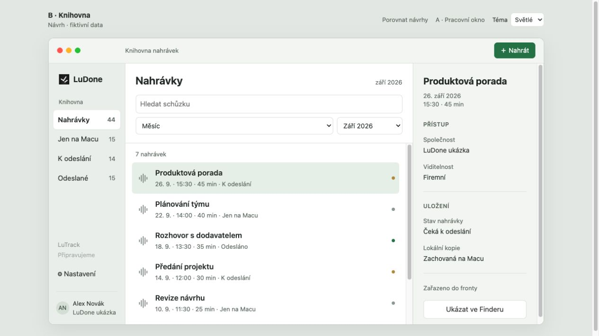
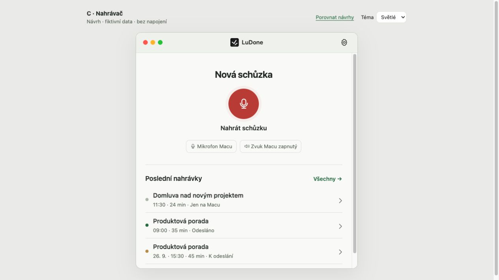

Pracovní okno
Teď, Můj den a Nastavení v jednom okně. Přímá návaznost na dnešní aplikaci.

Stejné nahrávky, tři různé způsoby používání. Zatím návrhy ke schválení.
Teď, Můj den a Nastavení v jednom okně. Přímá návaznost na dnešní aplikaci.
Postranní navigace, seznam a detail vedle sebe. Pro práci s větším množstvím nahrávek.

Jedno hlavní tlačítko, poslední schůzky a historie na vyžádání. Pro každodenní nahrávání.
